이 시트로 할 수 있는 일
탭이 여러 개라 복잡해 보이지만, 결국 이 시트가 해주는 일은 아래 6가지예요. 각 작업이 어느 탭에서 일어나는지도 같이 적어뒀어요.
📝손님 등록 처리하기
손님이 등록 폼을 작성하면 폼 응답에 쌓이고, 확인 후 체크 한 번으로 활성 회원에 등록 + 일정까지 자동으로 들어가요.
🗓️매일 다이빙 스케줄 짜고 공유하기
일정에 쌓인 그날 예약을 모아서 홈에서 표 · 스태프용/손님용 이미지로 한 번에 만들어요.
☎️전화 · 카톡 신청 바로 넣기
폼을 안 거친 신청도 홈의 "＋ 신청 추가"로 바로 일정에 넣을 수 있어요.
🎟️패키지 횟수 자동 관리
패키지에 등록해두면 펀다이빙할 때마다 자동으로 횟수가 깎이고, 스케줄표에 바로 표시돼요.
📚이론교육 발송 시기 챙기기
오픈워터 · 어드밴스드 일정이 잡힌 손님을(재신청이든 처음이든) 이론교육이 자동으로 찾아내서 보낼 시기를 알려줘요.
📄Permit 명단 뽑기
그날 다이빙하는 손님들의 여권정보 명단을 Permit · Boat Permit에서 엑셀로 바로 받아요.
새 손님 등록하기 (폼)
손님이 등록 폼을 작성해도 자동으로 회원이 되지는 않아요. 꼭 한 번 확인하고 활성화해줘야 해요.
📋방법 1 — 홈 탭 "대기중인 폼 신청" (추천)
홈 탭 대기중인 폼 신청을 누르면, 아직 활성화 안 한 신청만 이름 · 신청 종류 · 첫 일정 · 연락처 요약으로 모아서 보여줘요. 카드 옆 활성화 버튼 하나로 바로 등록돼요.
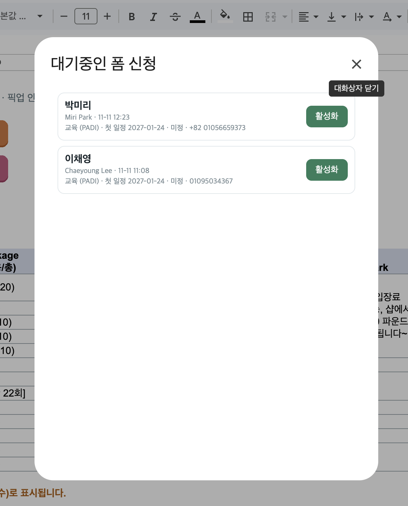
📝방법 2 — 폼 응답 탭에서 직접
- 폼 제출이 들어오면 폼 응답 탭 맨 아래 새 줄이 생겨요
- 내용 확인 — 여권 사본 · 자격증 · 증명사진 링크, 교육이면 과정 선택도 확인
- 맨 오른쪽 활성화 체크박스를 누르면 → 회원 명단에 자동 등록 + 일정 탭에 첫 날짜 일정까지 자동으로 들어가요
- "등록 결과" 칸에 회원번호 · 성공/실패가 표시돼요. 실패했으면 빨간 글씨 이유를 보고 다시 시도
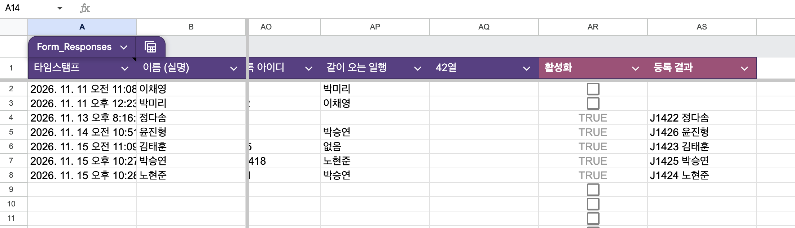
📚교육 과정을 여러 개 체크했을 때
폼의 "교육 과정"은 체크박스라 한 손님이 여러 개를 한 번에 신청할 수 있어요. 고른 과정에 따라 처리 방식이 둘로 나뉘어요.
① 순서 있는 과정 — 오픈워터 · 오픈워터+어드밴스드 · 어드밴스드 · EFR · 레스큐
신청한 날짜부터 레벨 순서대로 날짜를 이어 붙여서 전부 날짜 있는 진짜 일정으로 들어가요. 한 과정이 끝난 바로 다음 날부터 다음 과정이 시작돼요.
② 날짜 미확정 과정 — 마스터(DMT) · 인스트럭터(IDC) · 스페셜티 · 트레이닝
며칠짜리인지 정해진 게 아니라서 자동으로 이어 붙이지 않아요. 신청한 희망 시작일만 찍어서 진한 노란색으로 들어가요 — 날짜가 맞는지 확인하고 필요하면 고쳐주세요.
| 과정 | 일정 일수 | 처리 방식 |
|---|---|---|
| 오픈워터 | 3일 | ① 순서대로 날짜 이어 붙임 |
| 오픈워터 + 어드밴스드 | 5일 | |
| 어드밴스드 | 2일 | |
| EFR | 1일 | |
| 레스큐 | 2일 | |
| 세미 오픈워터 | 1일 | ① 취급(다른 순서 과정과 같이 신청 시 이어 붙음) |
| 마스터(다이브마스터) · 인스트럭터(IDC) | 1일 | ② 희망일만 표시, 확인 필요 |
| 스페셜티(Deep·Nitrox) · 트레이닝(Kick·SMB·Buoyancy) | 1일 |
예시: 오픈워터(3일) + EFR(1일) + 레스큐(2일) + 스페셜티·Deep(1일)를 11/20에 같이 신청하면 → 오픈워터 11/20~22, EFR 11/23, 레스큐 11/24~25까지 자동으로 날짜가 들어가고, 스페셜티·Deep만 11/20 날짜로 찍힌 채 노란색으로 표시돼서 확인이 필요해요.
🤿펀다이빙 · 체험다이빙 신청은 어떻게 처리되나요
교육과 달리 이쪽은 날짜 하나(신청일)에 줄 1개만 만들어져요. 시간 · 사이트는 아직 안 정했으니 비워 두고 "시간 정하기" 메모만 남겨요 — 나중에 "＋ 신청 추가"처럼 일정 탭에서 직접 채워주면 돼요.
| 신청 종류 | 일정 탭에 들어가는 내용 |
|---|---|
| 펀다이빙 (일별 신청) | Fun Diving 1줄 (사이트 미정) |
| 펀다이빙 (패키지 혜택 신청) | Fun Diving 1줄 + 패키지 탭에 자동 등록(그 날 시작, 사용 0회) — 이후 펀다이빙할 때마다 패키지 탭이 알아서 횟수를 세요 |
| 펀다이빙 (체크다이빙) | Check Diving 1줄 (사이트 미정) |
| 체험다이빙 | DSD 1줄 |
회원관리
회원은 활성 회원 · 비활성 회원 두 탭에 나뉘어 있어요. 오래 안 온 손님은 비활성으로 넘어가고, 상태(O열)를 바꾸면 자동으로 다른 탭 맨 위로 옮겨가요.
🔍회원 찾기
홈 탭 회원 찾기 또는 메뉴 스쿠버존 → 회원 찾기. 이름 · 영문 · 회원번호 아무거나 입력하면 활성 · 비활성 둘 다 같이 찾아줘요. 검색 결과 줄마다 시트에서 보기로 바로 이동할 수 있고, 활성화 · 비활성화 버튼도 같이 있어서 여기서 바로 상태를 바꿀 수도 있어요.
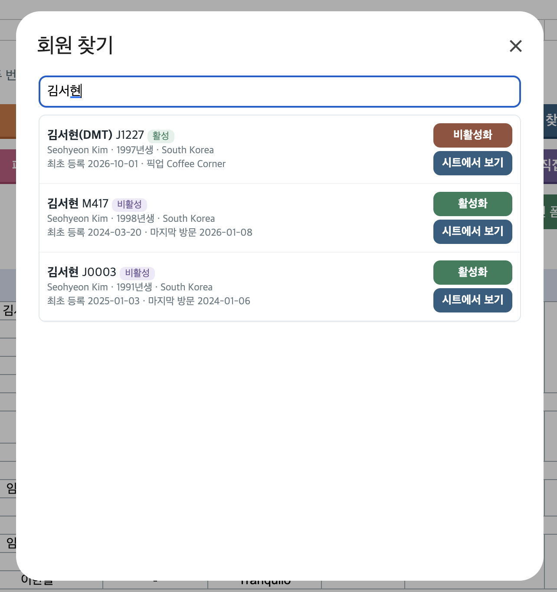
🔁회원 활성화 · 비활성화하기
오래 연락이 없는 손님은 비활성으로 넘겨서 활성 회원 탭을 깔끔하게 유지해요. 다시 오면 활성화로 되돌리면 돼요. 세 가지 방법이 있어요.
① 한 명씩 — 상태 칸에서 바로
활성 회원 탭의 상태(O열)를 "비활성"으로 바꾸면 그 줄이 자동으로 비활성 회원 탭 맨 위로 옮겨가요. 비활성 회원 탭에서 "활성"으로 바꾸면 반대로 활성 회원 탭 맨 위로 돌아와요.
② 여러 명 한번에 — 줄 선택 후 버튼
옮길 손님들의 줄 번호를 먼저 선택(Shift로 범위, Cmd/Ctrl로 하나씩 추가)하고 비활성화 하기 / 활성화 하기 버튼을 누르면 선택한 사람 전부 한 번에 옮겨져요.
③ 회원 찾기 결과에서 바로 — 바로 위 "회원 찾기" 결과 줄에 있는 활성화 · 비활성화 버튼을 눌러도 똑같이 처리돼요. 시트를 열어둘 필요 없이 가장 빠르게 끝낼 수 있어요.
✍️회원 직접 추가
폼 없이 샵에서 직접 등록할 때 쓰는 ＋ 회원 직접 추가. 이름 · 영문 이름 · 여권번호 등 기본 정보를 바로 입력해요. 여권번호가 이미 있는 회원이면 등록 대신 "이미 있는 회원이에요"라고 알려줘요.
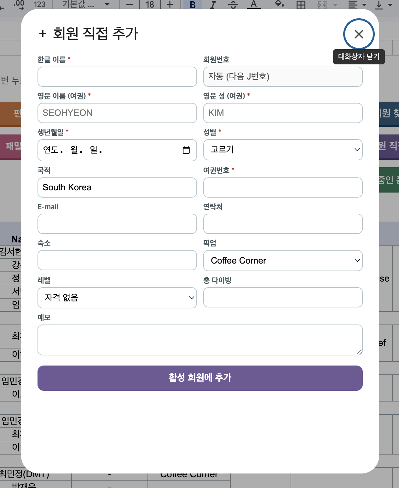
📖회원 이력 조회
메뉴 스쿠버존 → 회원 이력 조회에서 이름 · 영문 · 회원번호로 검색하면, 그 손님이 우리 샵에서 다이빙한 횟수(펀·보트·나이트) · 교육 횟수 · 체험 횟수 · 전체 일정 건수 · 남은 패키지 횟수를 요약으로 보여주고, 아래에 날짜별 전체 이력(종류·시간·강사)이 표로 쭉 나와요.
① 메뉴에서 열기
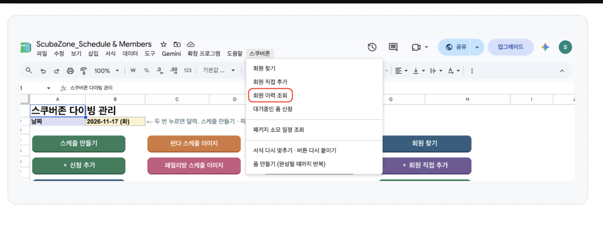
② 결과 화면
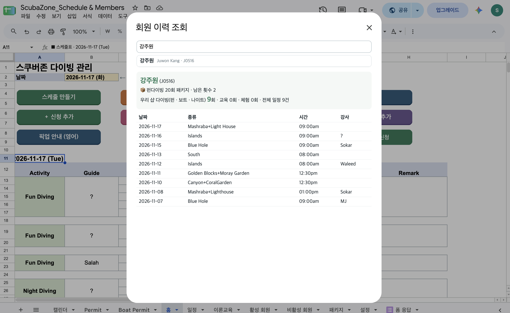
🎨활성 회원 탭 줄 색깔
활성 회원 탭은 줄마다 자동으로 색이 칠해져서, 눈으로 훑기만 해도 뭘 봐야 할지 알 수 있어요.
| 색 | 의미 |
|---|---|
| 🔴 연한 빨강 | 픽업 칸이 비어있거나 "?"(모르겠음) — 확인해서 채워 넣어야 해요. "-"(직접 옴)는 정상이라 빨강 대상이 아니에요 |
| 🟡 노랑 | 🆕 신규 — 등록한 지 얼마 안 된 회원 (2일 지나면 매일 새벽 자동으로 사라져요) |
| 🔵 파랑 | 🔁 재방문 — 비활성이었다가 다시 활성으로 돌아온 회원 (2일 지나면 자동으로 사라져요) |
🚐회원 픽업 정보 넣기 · 바꾸기
회원 탭의 픽업 칸은 드롭다운이에요 — 설정 탭에 등록된 픽업 장소 목록 중에서 고르면 되고, 목록에 없는 새 장소도 직접 입력할 수 있어요. 픽업이 필요 없이 직접 오는 손님은 "-"를 선택해요.
빨간색으로 표시된 줄(픽업 칸이 비어있거나 "?")은 아직 픽업 정보가 안 들어간 회원이니, 손님께 확인해서 채워 넣어 주세요.
이미 픽업이 있는 회원의 픽업 칸을 수정하면, 오늘 이후로 이미 잡혀있는 그 회원의 일정에도 새 픽업 장소가 자동으로 같이 반영돼요. 지난 날짜 기록은 그대로 둬요.
스케줄 만들기
아침마다(또는 전날 저녁) 이 순서대로 하면 돼요. "홈" 탭 하나에서 전부 끝나요.
📅1) 날짜 정하기
홈 탭 맨 위 날짜 칸(B2)을 두 번 클릭하면 달력이 떠요. 내일 날짜가 기본으로 들어가 있어요. 스케줄 만들기 · 픽업 안내 · 이미지는 전부 이 날짜 기준으로 나와요.
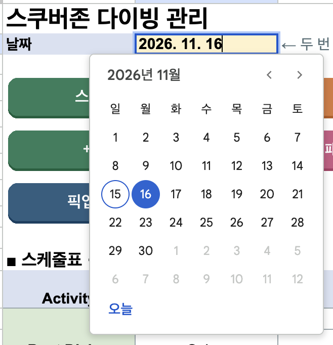
🗂️2) 스케줄 만들기 누르기
그 날짜에 등록된 일정을 전부 모아서 표로 만들어줘요. 보트다이빙 → 펀다이빙 → 나이트 → 교육 순으로 먼저 묶이고, 같은 종류 안에서는 시간이 빠른 순으로 정렬돼요. 패키지 쓰는 사람은 이름 옆 Package 칸에 (사용/총) 형식으로 자동 표시돼요.
- 홈 탭에서 스케줄 만들기 클릭
- 아래로 스케줄표 · 픽업 요약 · 영어 픽업 안내가 쭉 나와요
- 시간 · 가이드 · 픽업 장소가 틀리면 표 안에서 직접 고쳐도 돼요 — 이미지 뽑을 때 고친 내용이 반영돼요
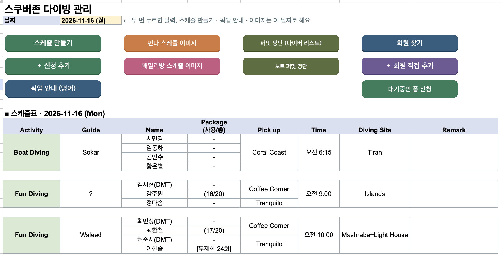
🖼️3) 스케줄 이미지 뽑아서 공유하기
카카오톡 등으로 공유할 이미지 두 종류가 있어요. 칸 구성(Activity · Guide · Name · Package · Pick up · Time · Diving Site · Remark)은 완전히 똑같고, 실제로 다른 건 "어떤 일정까지 포함되는가"예요.
펀다 스케줄 이미지
스태프용. 펀다이빙 · 나이트다이빙 · 보트다이빙 · 체크다이빙, 그리고 스페셜티/트레이닝(EFR · 레스큐 · Deep/Nitrox Specialty · Kick/SMB/Buoyancy Training)까지만 보여요. 오픈워터 · 어드밴스드 · DMT · IDC 같은 정식 교육 과정은 빠져요 — 교육팀 일정까지 안 섞이게.
패밀리방 스케줄 이미지
손님 단체방 공유용. 그 날의 일정을 전부 보여줘요 — 펀다 이미지에 들어가는 것 + 오픈워터 · 어드밴스드 · DMT 같은 정식 교육 과정까지 모두 포함돼요. 제목 줄도 파란 배너로 다르게 나와요.
- 버튼 클릭 → 창이 뜨면 ⬇ 이미지 다운로드 클릭, 또는 그림 위에서 오른쪽 클릭 → "이미지 복사" 해서 바로 카톡에 붙여넣기
- 이미지 맨 아래에 "패키지에는 내일 예정된 다이빙까지 포함되어 있으며 …" 안내 문구가 항상 같이 나가요
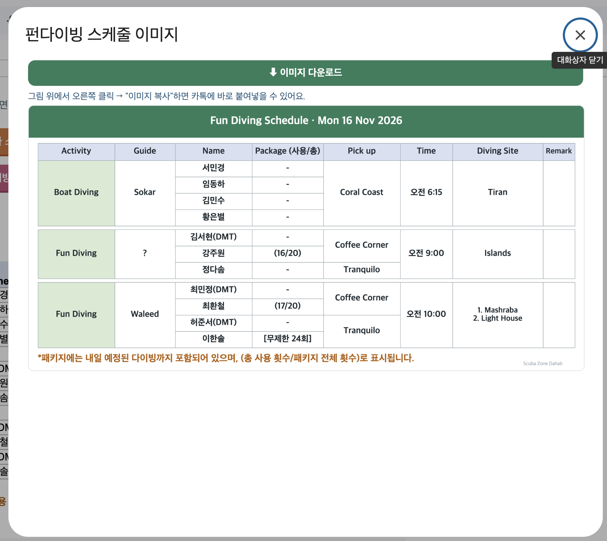
펀다 이미지 — AOW 빠짐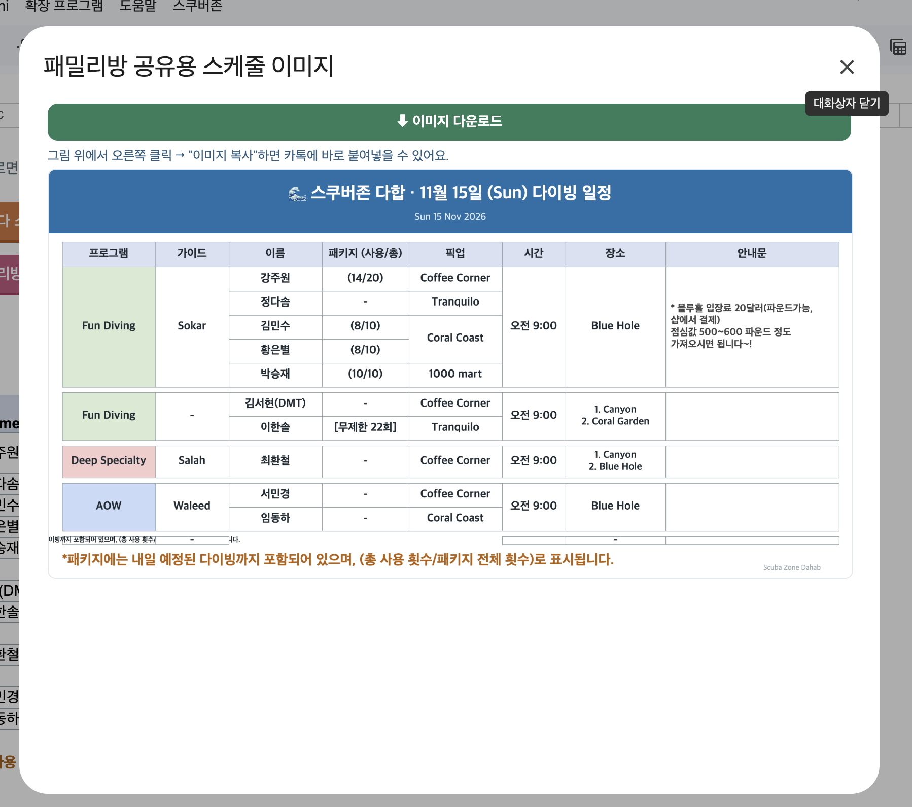
패밀리방 이미지 — AOW까지 전부🚗4) 픽업 안내 보내기
홈 탭 픽업 안내 (영어)를 누르면, 이집션 드라이버에게 보낼 영어 픽업 메시지가 뜨는 창이 열려요. "복사하기" 누르고 바로 위챗 등에 붙여넣으면 돼요.
일정 직접 추가하기
전화나 카톡으로 다이빙 신청이 들어오면 ＋ 신청 추가로 넣어요.
- 홈 탭 ＋ 신청 추가 클릭
- 날짜를 확인하고, ＋ 팀 추가로 묶음을 만들어요 — 같은 시간 · 같은 일정을 하는 사람들을 한 팀으로 묶으면 돼요
- 이름 칸에 손님 이름 · 영문 · 회원번호 아무거나 입력해서 찾기 → 체크해서 선택
- 종류(펀다이빙 · 교육 · 보트다이빙 · 체험다이빙 · 기타 · 셋업) 고르기
- 펀다이빙을 골랐으면 사이트 선택 + 오른쪽 드롭다운에서 일반 / 🌙 나이트다이빙 / 체크다이빙 중 선택
- 시간 · 강사 · 메모 적고 일정에 넣기
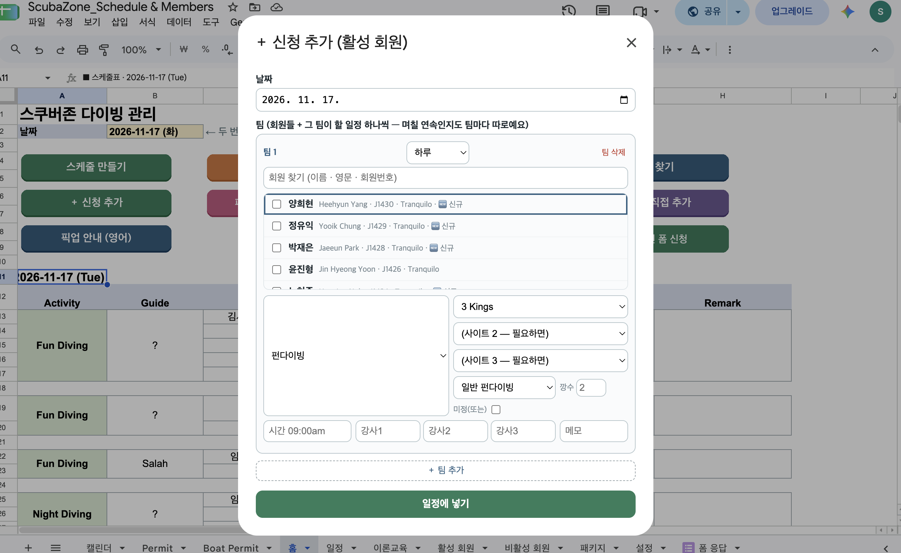
패키지 관리
펀다이빙 10회 · 20회 · 한 달 무제한 패키지를 등록해두면, 그 손님이 펀다이빙할 때마다 자동으로 횟수가 깎여요.
➕패키지 등록하기
- 패키지 탭으로 이동
- 맨 아래 빈 줄에 회원번호를 입력하면 이름은 자동으로 채워져요
- 패키지 종류(10회/20회/한달 무제한) · 시작일 선택, 결제 확인됐으면 결제완료 체크
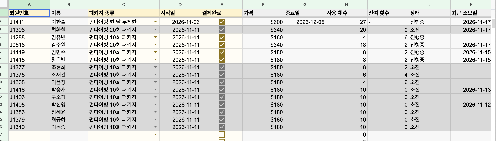
🏷️스케줄표에서 어떻게 보이나요
패키지가 있는 손님은 스케줄표 · 이미지의 Package (사용/총) 칸에 (14/20) 처럼 표시돼요. 패키지가 없는 손님은 - 로 보여요.
| 표시 | 의미 |
|---|---|
- | 패키지 없음 (그날그날 결제) |
(14/20) | 20회권 중 14회 사용 (6회 남음) |
[무제한 12회] | 한 달 무제한 패키지, 지금까지 12번 다이빙 |
⚠️사용 완료 | 이 다이빙으로 패키지를 전부 소진 — 다음부터는 결제 필요 |
🧾소모 내역 확인 · 되돌리기
패키지 탭에서 확인하고 싶은 회원 줄(아무 칸)을 클릭하고 메뉴 스쿠버존 → 패키지 소모 일정 조회를 누르면, 그 패키지로 언제 · 어느 사이트에서 깎였는지 전부 보여줘요. 잘못 깎인 줄은 그 자리에서 제외 버튼으로 바로 되돌릴 수 있어요(횟수도 자동으로 복구돼요).
① 패키지 탭에서 회원 줄 선택 후 메뉴 클릭
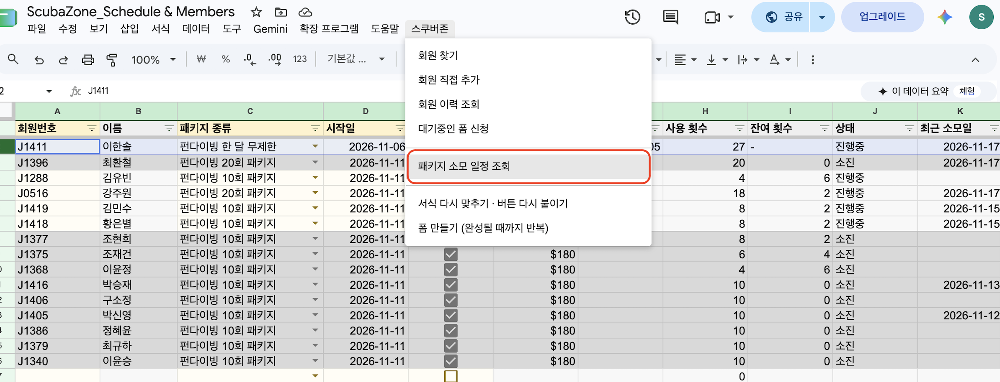
② 소모 내역 결과 — 날짜별 "제외" 버튼
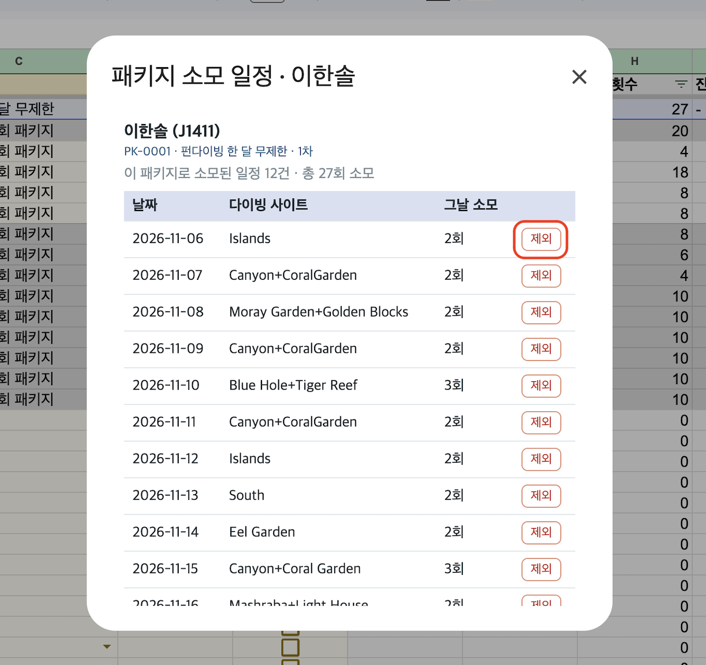
- 일정 탭 그 줄의 깡수 칸 비움
- 일정 탭 그 줄의 패키지 여부 체크 해제
- 일정 탭 그 줄의 배지 칸 비움
- 일정 탭 그 줄의 패키지 구분(몇 차) 칸 비움
- 패키지 탭의 사용 횟수에서 그만큼 차감 (잔여 횟수 · 상태는 자동으로 같이 바뀜)
- 그 회원의 남은 소모 기록들 배지 번호를 날짜순으로 다시 매김
➕이미 있던 일정을 패키지에 넣기
펀다이빙은 패키지 등록 이후 날짜부터 자동으로 깎이지만, 결제가 늦게 확인돼서 일정이 먼저 있었던 경우나 나이트다이빙처럼 원래 자동으로는 안 깎이는 일정을 손님이 추가 금액 내고 패키지로 하고 싶다고 할 때 쓰는 기능이에요. 전부 자동으로 처리하지 않고, 어떤 일정을 넣을지 직접 골라요.
- 패키지 탭에서 그 회원의 패키지 줄(아무 칸)을 선택
- 메뉴 스쿠버존 → 패키지에 일정 추가 클릭
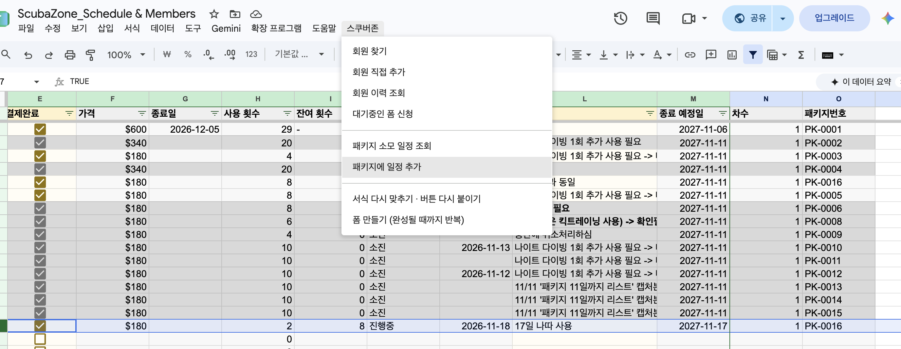
- 아직 패키지로 안 들어간 그 회원의 펀다이빙 · 나이트다이빙 일정 목록이 체크박스랑 같이 떠요(보트 · 교육은 목록에 안 나와요). 카테고리 · 종류가 각각 따로 보여서 일정 탭 원본이랑 똑같이 확인할 수 있어요
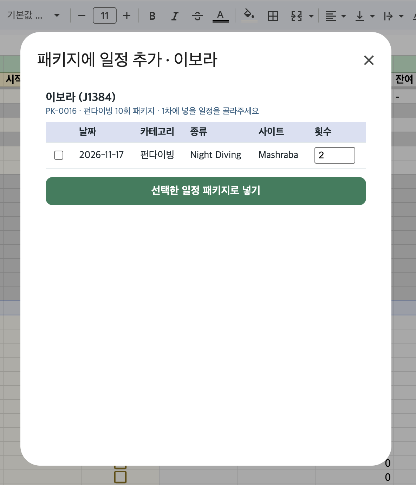
- 넣고 싶은 줄만 체크 — 횟수는 줄마다 직접 고칠 수 있어요(펀다이빙은 기본 2회, 나이트다이빙은 기본 1회)
- "선택한 일정 패키지로 넣기" 클릭하면 그 줄들만 한꺼번에 깎여요
이론교육 발송 리스트
오픈워터 · 어드밴스드 일정이 있는 손님에게는(재신청이든 처음이든 상관없이) 교육 시작일 3주 전까지 이론 자료를 보내줘야 해요. 이 탭이 자동으로 챙겨줘요.
⚙️리스트에 어떻게, 언제 올라오나요
- "스케줄 만들기"를 누를 때마다 전체 일정을 훑어서, 앞으로 있을 오픈워터 · 어드밴스드 일정을 전부 찾아 자동으로 한 줄 추가해요 — 그 회원이 처음인지 재신청인지는 안 가려요
- 세미 오픈워터 · EFR · 레스큐 · DMT · IDC · 스페셜티 · 트레이닝 · 체크다이빙은 대상이 아니라서 리스트에 아예 안 올라가요(오픈워터 · 어드밴스드만 대상)
- 교육이 며칠짜리든(OW 3일 등) 첫날 기준으로 한 줄만 생겨요. 이미 지나간 교육은 안 훑어요 — 앞으로 할 교육만 챙겨요
- 발송 기한 = 교육 시작일 − 3주(21일). 예: 교육 시작일이 11/17이면 발송 기한은 10/27
- 한 번 발송완료를 체크한 줄은 이후 "스케줄 만들기"를 다시 눌러도 다시 안 건드려요. 체크하면 발송일이 오늘 날짜로 자동 기록되고, 체크를 풀면 발송일도 같이 지워져요
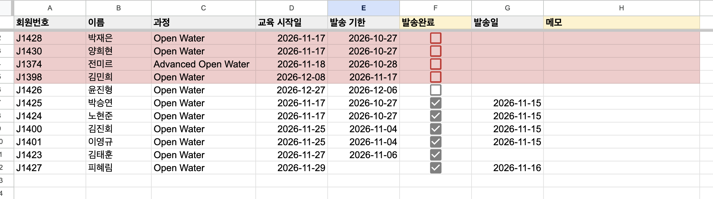
Permit 명단 뽑기
일반 Permit
홈 탭 퍼밋 명단 클릭 → Permit 탭에서 날짜 · "All divers/Fun diving only" 선택 후 Search → Download Excel로 다이버 명단(여권정보 포함)을 엑셀로 받아요.
보트 Permit
홈 탭 보트 퍼밋 명단 클릭. 보트별로 블록이 나뉘어 나오고, Box No. · Weight Belt · Payment · Remark는 빈칸이니 직접 채워주세요.
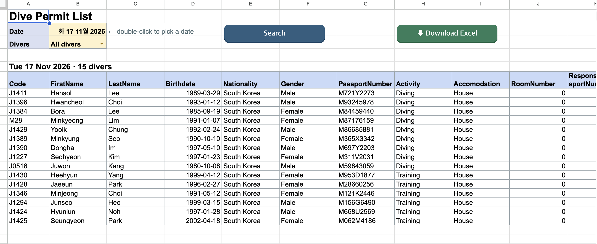
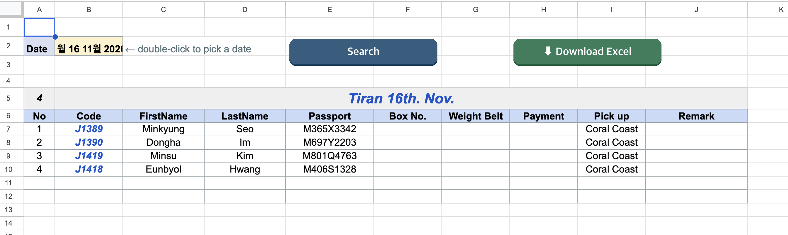
자주 하는 실수
일정 탭에 직접 입력했는데 빨간 세모(경고)가 떠요
패키지 손님인데 횟수가 안 깎여요
이론교육 리스트에 당연히 있어야 할 사람이 안 보여요
스케줄표에 패키지 숫자가 이상해요(소진했는데 남아있다고 나와요)
문제가 생겼을 때
그래도 안 되면
화면을 캡쳐해서 서현님에게 보내주세요. 어느 탭, 어느 버튼을 눌렀는지만 같이 알려주면 빨라요.